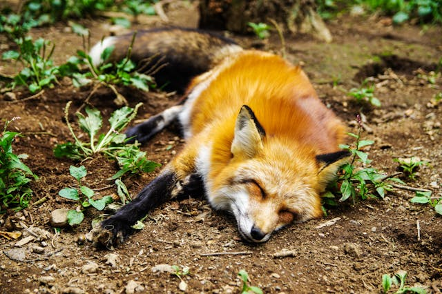
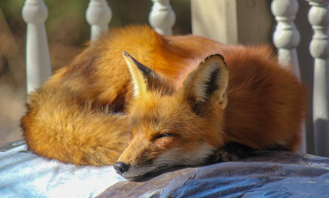
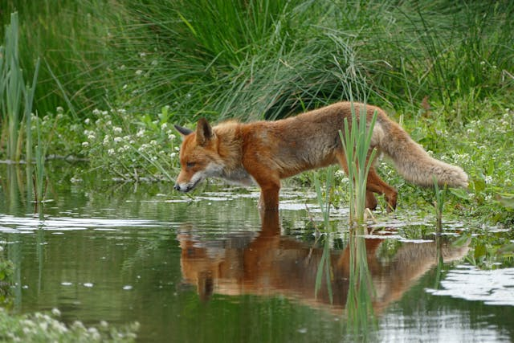
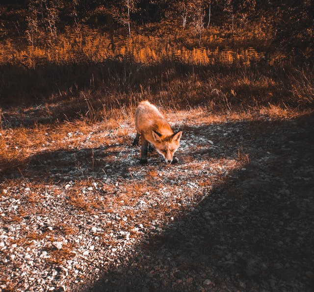

Sobre as Raposas
   As raposas são mamíferos pertencentes à família Canidae, que inclui também cães, lobos e coiotes. Conhecidas por sua astúcia e adaptabilidade, as raposas são encontradas em diversos habitats ao redor do mundo, desde florestas e campos até áreas urbanas. Entre as espécies mais conhecidas está a raposa-vermelha (Vulpes vulpes), que é a mais amplamente distribuída. As raposas possuem uma pelagem que varia em cor, mas a mais comum é o vermelho alaranjado com uma ponta de cauda branca. As raposas são criaturas fascinantes e essenciais para o equilíbrio ecológico dos ambientes em que vivem. Elas desempenham um papel importante como predadoras, controlando populações de pequenos animais e insetos, o que ajuda a manter a saúde dos ecossistemas. No entanto, muitas vezes são mal compreendidas e injustamente perseguidas. É fundamental reconhecer que, apesar de sua natureza astuta e de suas adaptações impressionantes, as raposas enfrentam ameaças significativas devido à perda de habitat, mudanças climáticas e atividades humanas, como a caça e o envenenamento. As áreas urbanas também apresentam desafios adicionais, como a exposição a doenças e a dependência de alimentos provenientes de lixeiras. Para ajudar a proteger essas criaturas incríveis, é crucial apoiar iniciativas que promovam a conservação de habitats naturais e a implementação de medidas de proteção contra práticas prejudiciais. Além disso, promover a educação e a conscientização sobre o papel das raposas na natureza pode ajudar a reduzir preconceitos e a promover uma coexistência harmoniosa entre humanos e vida selvagem. Ao valorizar e proteger as raposas, contribuímos para a saúde e o equilíbrio dos nossos ecossistemas, garantindo que essas criaturas continuem a desempenhar seu papel vital na natureza por muitas gerações futuras.